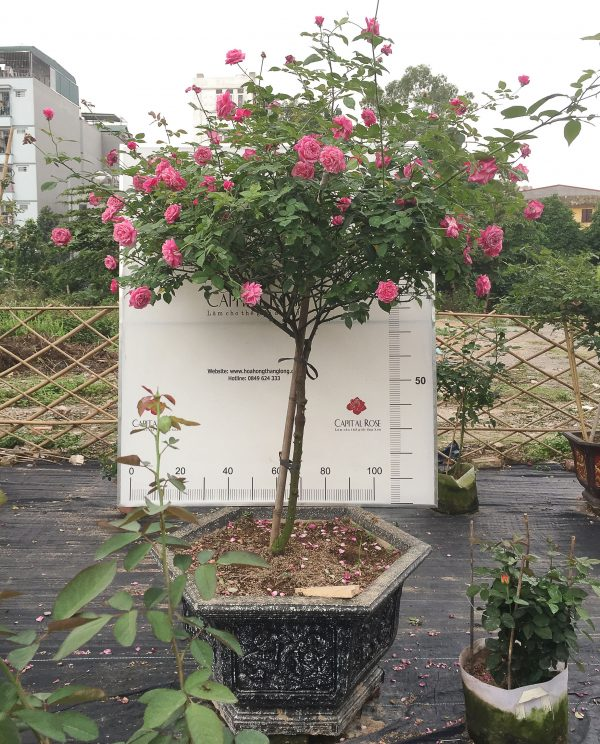
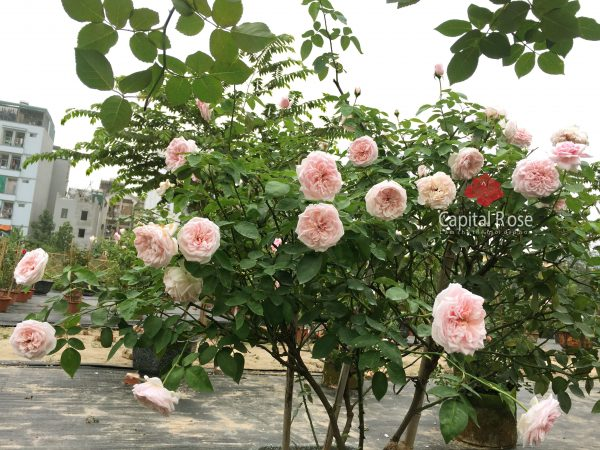
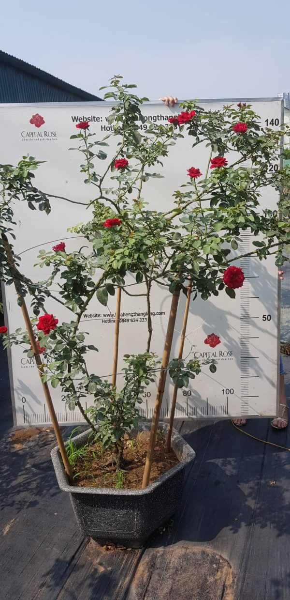

HOA HỒNG CỔ - LOÀI HOA BÊN BỈ VÀ MẠNH MẼ
Hoa hồng cổ là gì ?
Hoa hồng cổ là gì? Có lẽ nhiều người chơi hoa sẽ chẳng còn xa lạ với những giống hồng cổ ở Việt Nam với nhiều giống hông cổ nổi bật như: ”hồng cổ Sapa, hồng cổ Hải Phòng,hồng cổ Bạch trà ..” là những giống hồng cổ có hương thơm và màu sắc cực kì quyến rũ.
Khác với những giống hồng ngoại được du nhập về Việt Nam với form hoa to, hương thơm đậm nhưng lại có nhược điểm là không thích hợp với khí hậu nước ta do đó việc trồng và chăm sóc khá khó khăn. Hoa hồng cổ mang vẻ đẹp truyền thống giữ lại nét cổ xưa của cha ông để lại và đặc biệt chúng thích nghi tốt với khí hậu nước ta,phát triển mạnh mẽ. Hồng cổ được chia làm hai loại, loại bản địa (hồng Đào, hồng bạch cổ, hồng quế,…) và hồng ngoại từ Anh, Pháp được du nhập vào Việt Nam từ rất lâu rồi (Cổ Vân khôi, cổ Sapa, cổ Hải Phòng, bạch trà…) – những giống này có màu sắc và hương thơm rất quyến rũ.
Sự khác biệt giữa hoa hồng cổ và hoa hồng ngoại
Bạn có thắc mắc vì sao hoa hòng ngoại với nhiều đăc tính nổi bật như màu sắc rực rỡ, hương thơm đậm form hoa lại to nhưng vẫn không thể lấn chiếm được các giống hoa hông cổ không? Câu trả lời rất đơn giản là vì những người chơi đa phần là dân công sở, hoặc người đã nghỉ hưu, chơi hoa, thưởng hoa là thú vui nhưng không thể vì thế mà từ bỏ quá nhiều thời gian, thậm chí cả sức khỏe để phun thuốc trị bệnh, thuốc kích thích cho đám hồng ngoại xinh đẹp được, nhất là những gia đình có con nhỏ, ở chung cư chật hẹp…
Tuy nhiên, những bông hồng cổ lại có sức sống mạnh liệt khác hẳn giống hoa hồng ngoại, chúng phát triển tốt trong điều kiện khí hậu khắc nghiệt nước ta nhất là ở miền Bắc, mùa đông thì rất lạnh còn mùa hè thì rất nóng, phù hợp với khí hậu mọi miền đất nước. Cây trồng được nhiều năm có những cây sống được cả trăm năm mà không hề bị thoái hóa giống do giống hoa hồng thuần thích nghi lâu dài. Cây có khả năng kháng trừ sâu bệnh rất tốt, nếu càng trồng lâu cây càng sai hoa nhé.
Một số giống hoa hồng cổ quý của Việt Nam
- Hồng cổ Sapa
- Hoa hồng Vân Khôi
- Hoa hồng cổ Hải Phòng
Giống hồng cổ Sapa được du nhập từ Pháp vào nước ta từ thế kỷ 19, cây thuộc dạng thân bụi lớn có những cây trồng theo kiểu bán leo, cây cao có những cây nếu sống trong môi trường thích hợp có thể cao tới 5m. Hoa có màu hồng đậm, đỏ, tím nhưng có lẽ phổ biến nhất mà ta thấy được chính là màu hồng phấn, mỗi bông khi nở có kích thước lớn, được tạo nên bởi rất nhiều những cánh hoa lớn nhỏ khác nhau xếp xen kẽ.

Hồng Sapa cho hương thơm thoang thoảng đầy mê hoặc kết hợp với vẻ đẹp lộng lẫy thu hút mọi ánh nhìn. Hoa hồng cổ sapa có khả năng thích nghi tốt, cây sinh trưởng tốt, hoa sai ở mọi miền khí hậu, có điều cành mát và lạnh bông hoa sẽ to, cánh hoa dày và nhiều cánh hơn, độ to có thể ngang bát cơm.
Cây còn có tên khác là hồng Cung Phủ bởi vì trước đây, giống hoa hồng này rất quý, nó chỉ được trồng trong cung vua, phủ chúa những nơi cao sang, quyền quý mà thôi. Hoa hồng cổ đặc trưng bởi màu hồng phấn nhẹ nhàng giống như nét đẹp của những người thiết nữ vậy, những cánh hoa mỏng, nhẹ sắp xếp khéo léo ôm gọn lấy phần nhụy hoa
Hoa hồng Văn Khôi có hương thơm đậm đà, mỗi bông hoa khi nở xòe to nhìn rất đã mắt. Cây cho hoa quanh năm và rất sai hoa. Vì là giống hoa hồng cổ của Việt Nam vì thế cây có sức sống mạnh mẽ, thích nghi với mọi miền của tổ quốc.
Đây là một trong số ít loại hoa hồng cổ của Việt Nam có màu đỏ nhung mịn màng đến vậy. Kiểu dáng của hoa hồng cổ Hải Phòng khá phổ biến, cánh hoa lượn sóng, mùi thơm nhẹ. Khi nở kích thước mỗi bông hoa khá lớn, có một đặc điểm đó là hoa nỏ bền, có bông nở được đến gần 1 tháng, khi tàn hoa héo trên cành chứ không rụng xuống đất. Cây sai hoa và cho hoa quanh năm.
Cổ Hải phòng ngoài trồng để leo tường thì trồng để leo vòm cũng rất đẹp, với người trồng hoa, trải qua nhiều giống hồng leo ngoại khác, nếu được lựa chọn một cây hồng leo để làm đẹp cho nhà mình thì tôi chắc chắn lựa chọn leo cổ Hải Phòng đầu tiên. Bởi khó có thể tìm được một giống hồng leo khỏe, ít sâu bệnh, sai hoa, siêng hoa và hoa bền đến thế.